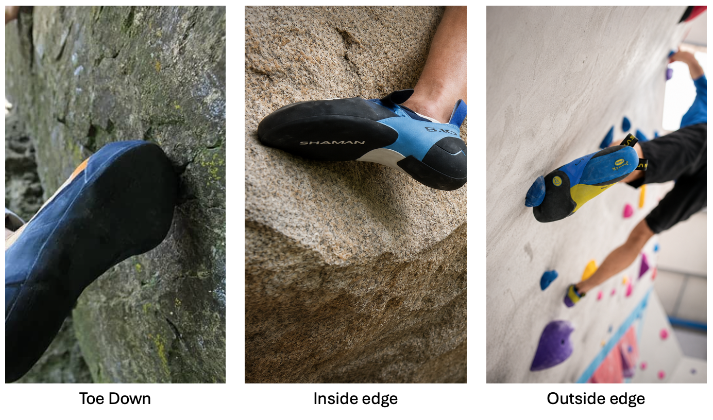
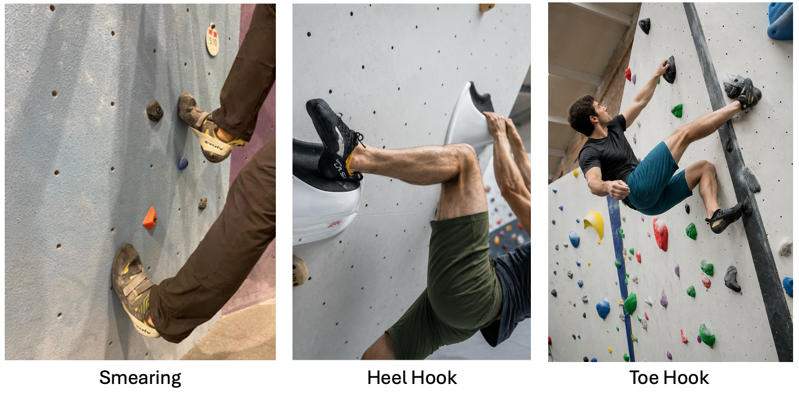
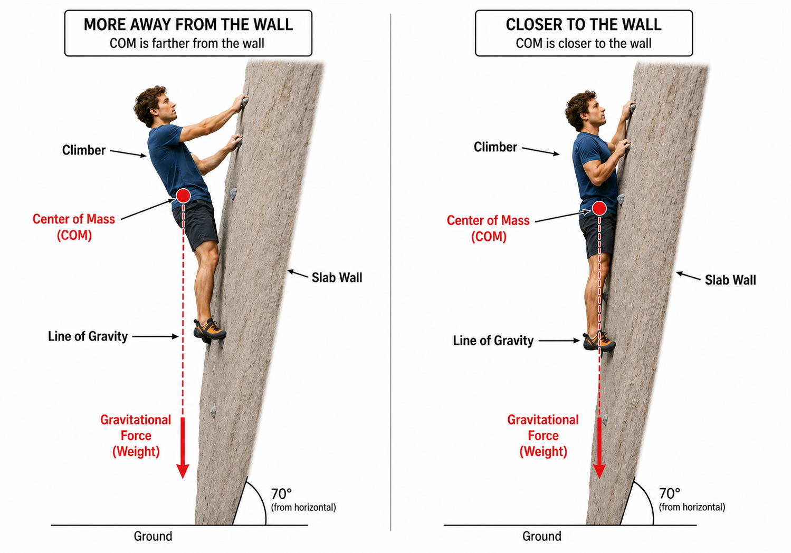
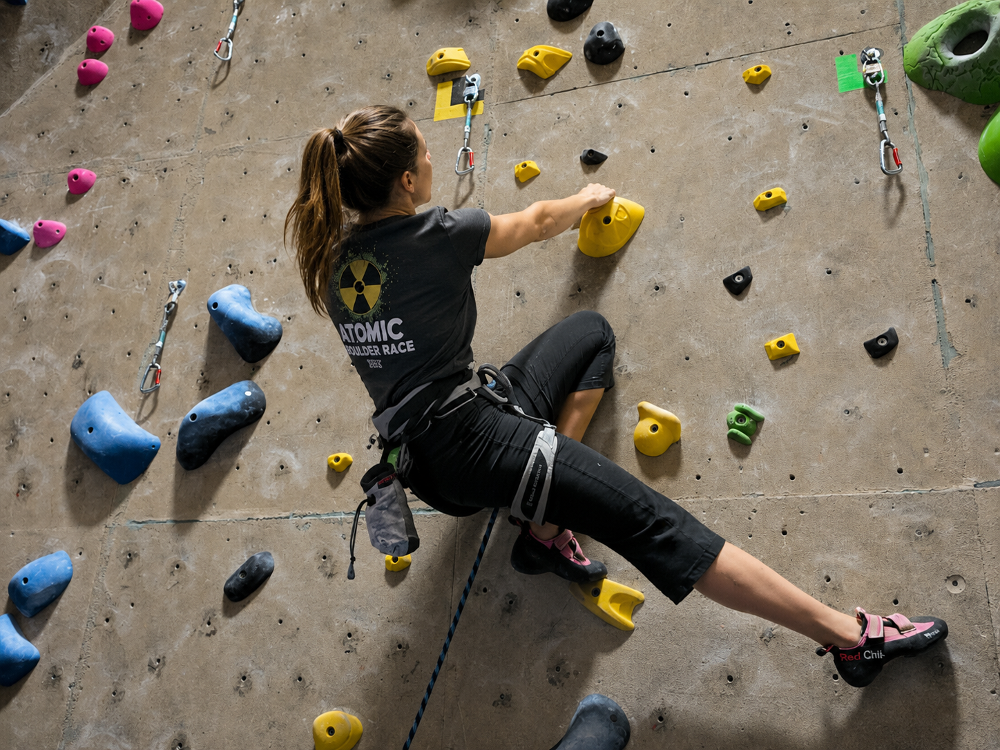
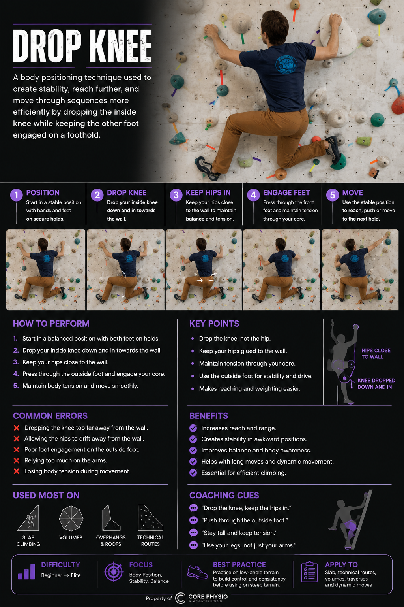
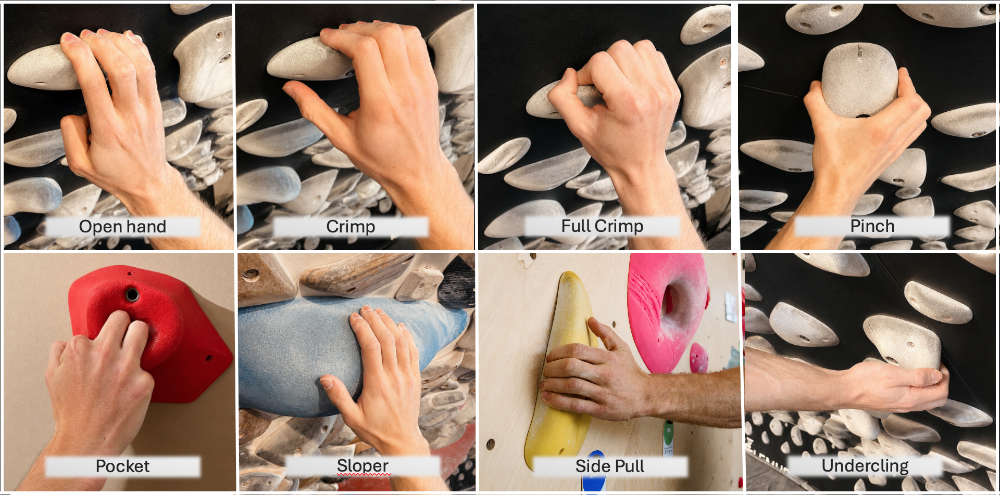

Module 06 · 06 of 07
Written Guide + Quiz
Why It Matters
Modules 1-5 built the foundation across anatomy, physiology, assessments, programming and basic technique instruction. Now we apply it directly to the wall. Climbing technique is the bridge between fitness and performance — two athletes with identical strength will achieve very different results depending on the efficiency of their movement. Your ability to observe, analyse, and improve climbing movement is your most sport-specific and immediately visible coaching skill.
By the end of this module, you will be able to:
Rock climbing is not a single sport — it is a family of related disciplines, each with unique movement demands, risk profiles, and coaching priorities. A well-rounded climbing coach should understand all disciplines even if they specialise in one. Understanding where a climber comes from, and where they want to go, shapes every coaching decision.
Bouldering involves climbing short problems — typically up to 4-5 metres — without a rope, over crash pads. Problems are rated on the V-scale (V0-V17) or Fontainebleau scale (3-9A). The absence of rope systems means the entire session is devoted to movement quality and problem-solving, making bouldering the most technique-dense format for skill development.
| Characteristic | Detail |
|---|---|
| Physical demands | Peak contact strength, explosive power, body tension, and precise coordination |
| Typical attempt duration | 1-30 seconds of intense effort per attempt |
| Rest between attempts | 3-10 minutes depending on intensity; full PCr recovery is essential |
| Coaching opportunities | Direct observation, immediate feedback, easy to repeat moves, no rope management distraction |
| Safety priority | Pad placement and coverage, spotting technique, fall practice, landing zones clear |
Sport climbing involves pre-bolted routes with permanent protection. Climbers clip quickdraws into bolts as they ascend. Routes are rated on the French numerical system (e.g. 6a, 7b+) or the Yosemite Decimal System (5.10, 5.13). Route length and the need to manage the pump distinguish sport climbing from bouldering.
| Characteristic | Detail |
|---|---|
| Physical demands | Power endurance, aerobic capacity, pacing strategy, psychological resilience |
| Typical attempt duration | 1-30 minutes per route attempt depending on length and style |
| Coaching focus | Rest position identification, clipping efficiency, breathing, pump management, lead fall practice |
| Safety priority | Correct clipping technique, belayer communication, lead fall practice, no clipping past bolts unclipped |
| Key additional skill | Fear management — lead falling is a learned skill and a significant barrier for many climbers |
Trad climbing involves placing removable protective gear — cams (spring-loaded camming devices), nuts, and hexes — into natural features as the climber ascends. The gear is removed by the second climber. Trad requires crack climbing technique (jamming), gear placement knowledge, and route-finding ability.
Scope Note
Coaching trad climbing safely requires specific technical competence in gear placement and anchor construction beyond the scope of this foundation course. Coaches should pursue a national governing body trad leader award before coaching Trad. This module addresses trad technique concepts only.
The majority of new climbers begin indoors, and indoor climbing is the fastest-growing sector of the sport. Competition formats sanctioned by World Climbing include:
For most coaching contexts, indoor bouldering and sport climbing are the primary disciplines. The principles of technique taught in this module apply directly to both indoor and outdoor climbing.
Footwork is the foundation of efficient climbing. Precise foot placement allows the climber to transfer weight through the legs, reducing arm load, preserving grip strength, and enabling balance. The single most common improvement a coach can make with a beginner climber is improving footwork — the gains are immediate and significant.
Coaching Principle
The feet are the cheapest energy source in climbing. Every time a foot slips, skips, or lands imprecisely, the hands must compensate. A climber who can trust their feet uses approximately 30-40% less grip force on the same terrain. Footwork coaching should be a priority at every level.
Edging uses the inside or outside edge of the climbing shoe to stand on small footholds. It is the most precise and widely used footwork technique, particularly on vertical and less-than-vertical terrain.
| Edging Type | Description & Application |
|---|---|
| Inside edge (big toe side) | The primary edging surface for most climbers. Used on footholds directly below the body, on incut holds, and in high-step positions. The ball of the foot presses through the hold. |
| Outside edge (little toe side) | Used when the foothold is to the outside of the body, during cross-steps, and in flag positions. Enables hip rotation and opens the hip toward the wall. |
| Front-pointing (toe) | The very tip of the shoe placed on a small hold or feature — most precise but most technique-dependent. Common on pockets, crystals, and tiny edges. |

Common edging errors and corrections:
Smearing is the technique used when there is no defined foothold — the rubber of the shoe is pressed against the rock or wall surface, relying on friction to generate grip. It is the dominant footwork technique on slab terrain and is also used between holds on all angles.
Slab-specific coaching cues: 'Trust your feet', 'Press through your heels', 'Stand up tall — lean back slightly to drive weight through the feet.'
A heel hook uses the back of the heel — specifically the Achilles-calcaneal region — on a hold to pull the body toward the wall or to lock off a position. Heel hooks are common in overhanging climbing, roofs, and compression problems.
A toe hook uses the top of the toes — the dorsum of the foot — to hook onto a hold, edge, or lip. It is primarily used in overhanging terrain, roofs, and compression problems to prevent the body from swinging away from the wall.

Efficient body positioning reduces the force required at individual contact points, preserves energy, and expands the range of holds and sequences accessible to the climber. The key principles are centre of gravity management, hip engagement, and rotational technique.
The centre of gravity (CoG) — approximately at the navel in a standing climber — must be kept over the base of support (feet) to maintain balance. When the CoG shifts outside the base of support, the hands must compensate by pulling to prevent a fall.
Coaching Drill — CoG Awareness
Ask the athlete to traverse a vertical wall using only their legs — hands only touching, not pulling. This forces them to position their CoG correctly over each foothold to maintain balance, developing a strong intuitive sense of weight distribution without the crutch of strong pulling.

Rotating the hips toward the wall allows the climber to reach further, reduces the torque on the shoulder, and brings the CoG closer to the wall surface — all of which improve efficiency. Hip rotation is one of the most impactful technique improvements a coach can instill in a beginner or intermediate climber.
There are two primary hip rotation techniques:

The drop-knee is a powerful hip rotation technique used on overhang and steep terrain. By rotating the knee of a foot on a sidepull or foothold downward toward the floor, the hips rotate toward the wall and the climber can reach further while keeping the body close to the wall.

| Component | Coaching Cue |
|---|---|
| Foot placement | Inside edge of the shoe on the hold; the foot should be below hip height to allow the knee to drop |
| Knee direction | 'Drop your knee toward the floor' — the knee rotates inward and downward, not outward |
| Hip position | The hip of the dropping knee drives toward the wall — 'Squeeze your hip into the wall' |
| Body outcome | The upper body is now side-on to the wall; the reaching arm can extend further with less shoulder load |
| Common error | Insufficient knee drop — the climber does partial rotation. Cue: 'Drop the knee all the way — knee toward the ground' |
The drop-knee is highly hip-mobility dependent. Climbers with restricted hip internal rotation (identified in the Module 3 screening) will find deep drop-knees difficult. Address hip mobility as a prerequisite for advanced drop-knee work.
The way a climber grips a hold determines both the force generated and the injury risk incurred. Understanding grip types and their biomechanical implications is essential for coaches — particularly in the context of finger injury prevention, which is the most common chronic injury in climbing.
| Grip Type | Description, Application & Injury Risk |
|---|---|
| Open hand | Fingers extended at approximately 30-45 degrees at the PIP joint; all fingers in contact with the hold; thumb typically alongside the index finger. Lowest injury risk — forces are distributed more evenly across tendons and pulleys. Develops more slowly than crimp but should be prioritised for long-term health. |
| Half crimp | PIP joints bent to approximately 90 degrees, DIP joints slightly extended; thumb not wrapped. A middle ground between open hand and full crimp. Good balance of strength and safety for most training. |
| Full crimp (closed crimp) | PIP joints bent to approximately 90 degrees, DIP joints hyperextended, thumb wrapped over index finger. The strongest grip position but places the highest load on the A2 pulley — the most common climbing injury site. Should be used tactically on the wall, not trained repeatedly in isolation. |
| Pinch | The hold is gripped between the thumb and fingers; requires adductor pollicis (thumb adductor) strength. Often undertrained. Pinch strength is sport-specific and responds well to dedicated training. |
| Sloper | The palm and fingers wrap over a rounded hold; relies on friction rather than hooking. Requires shoulder position and hip proximity to the wall to be effective. Often most effective with the wrist slightly extended. |
| One, two, or three fingers inserted into a hole in the rock. Monos (single finger) and duos (two fingers) place extreme concentrated loads on individual tendons and pulleys. Should be introduced gradually and avoided by beginners. | |
| Undercling | Hold gripped with palm facing upward; requires elbow flexion and hip proximity to generate upward pull. Effective as a rest position if core and hip position are correct. |
| Sidepull | Hold gripped with palm facing sideways; force is generated laterally against the hold. Body position is critical — feet must counterbalance the pull direction. |

Injury Prevention — Grip Training
Beginners should be coached to use open-hand grip wherever possible. The full crimp feels stronger because it is neurologically more familiar, but it dramatically increases A2 pulley stress. Coaches should actively cue open-hand during easy climbing and make the development of open-hand strength an explicit training goal.
Route reading is the cognitive skill of analysing a climb before or during an attempt to identify the most efficient sequence of moves, rest positions, clipping stances, and body positions. It is a learnable skill that separates experienced climbers from beginners of equivalent physical ability, and it is often the biggest performance limiter at intermediate and advanced levels.
| Level | Coaching Approach |
|---|---|
| Beginner | Teach them to stop at the base and look up. Most beginners start climbing without observing the route at all. Even basic observation (where are the big holds?) immediately improves performance. Keep reading tasks simple. |
| Intermediate | Introduce hold orientation analysis — which way does each hold face? How should the body be positioned to use each hold most efficiently? Introduce the concept of rest positions and planned shakeouts. |
| Advanced | Focus on beta optimisation — exploring alternative sequences to find more efficient solutions. Video analysis is valuable here. Introduce concepts of pacing (fast through pumpy sections, slow through technical cruxes) and clipping position planning. |
Fear of falling is one of the most significant limiting factors in climbing progression at all levels. Teaching athletes to fall safely removes a physical and psychological barrier, and reduces the risk of injury when falls do occur.
Bouldering falls onto crash pads require a different technique to rope falls. The key principles:
Falling Practice Drill
Introduce falling practice on low-height problems (V0-V1) before progressing to higher or more committing falls. Have athletes step off the wall from low heights onto pads, progressing to controlled falls from standing height, then dynamic falls. Normalise falling as a skill — not something to be feared.
A spotter's role in bouldering is to guide the climber to a safe landing — particularly to protect the head and neck — not to catch them. Attempting to catch a falling climber puts both parties at risk.
Effective technique coaching begins with accurate observation. The ability to identify the root cause of an error — rather than just its symptom — distinguishes experienced coaches from novice ones. The following table covers the most common technique issues seen across all levels, with root cause analysis and practical corrections.
| Error | Root Cause & Correction |
|---|---|
| Imprecise foot placement (feet skidding or shuffling onto holds) | Not looking at the hold before placing the foot. Correction: 'Footwork drill' — climb easy routes focusing only on feet, looking at each hold before placing. Use coloured tape to mark target foot placements. |
| Heel dropping on small edges | Lack of awareness or calf weakness. Correction: 'Keep your heel level — imagine balancing a coin on it.' Reinforce with deliberate slow placement on small holds. |
| Feet coming off the wall on steep terrain | Failing to actively engage toe and foot against the hold. Correction: Introduce heel and toe hook awareness drills. Cue: 'Grip the hold with your foot — it should feel like it's being pulled into the wall.' |
| Overuse of footholds directly under the body (not using outside edge or cross-step) | Limited repertoire of footwork patterns. Correction: traverse drills with restriction — 'only use outside edge footholds' or 'only cross-step'. |
| Error | Root Cause & Correction |
|---|---|
| Barn-door — body swings away from the wall | CoG outside base of support; no counterbalance. Correction: teach flagging on the spot — identify where the free leg should go; drill on a traverse with one hold deliberately positioned to require a flag. |
| Square-on hips on steep terrain | Not using hip rotation; treating all climbing as if it were a ladder. Correction: hip rotation drills on 30-45 degree boards; drop-knee specific practice; cue 'turn your hip into the wall'. |
| Arms bent on rests ('pulling on jugs') | Not trusting straight-arm resting position; unnecessary tension. Correction: 'Hang on your skeleton, not your muscles — straighten your arms on every jug.' Introduce ARC training on easy terrain. |
| Body too far from the wall on overhangs | Hips swinging back due to insufficient core tension. Correction: core engagement drills; flag or drop-knee to bring hips in; cue 'press your hips toward the wall'. |
| Error | Root Cause & Correction |
|---|---|
| Full crimping everything | Habit / perceived security of crimping. Correction: designate sessions as 'open-hand only'; explain the injury risk of the full crimp and the long-term benefit of open-hand development. |
| Shrugging shoulders on lock-offs | Weak scapular depressors; not initiating the pull from the lats. Correction: 'Shoulders down and back before you pull.' Reinforce with scapular pull-up exercises off the wall. |
| Locking off too long | Not committing to the next move quickly enough; holding static positions creates pump. Correction: introduce 'dynamic movement drills' — practice making the reach immediately without pausing at the lock-off. |
| Overgripping (white knuckles on easy holds) | Anxiety or lack of trust in feet. Correction: easy ARC traversing; cue 'your fingers are just hooks — relax them.' Address footwork simultaneously. |
Technique development is not a single curriculum delivered identically to every athlete. The appropriate coaching content, volume of instruction, and level of complexity must match the athlete's current stage of development. Using the motor learning framework from Module 2, here is a structured progression model for climbing technique coaching.
Characteristics: climbing below V2/6a; inconsistent footwork; square-on to wall; overgripping; limited route reading. The cognitive stage learner needs simple, clear, frequently repeated instruction in low-stress environments.
Characteristics: climbing V3-V6 / 6b-7a; reasonably consistent footwork on easy terrain; beginning to use some hip rotation; some route reading ability. The associative stage learner has the basics and is now developing consistency and expanding their movement vocabulary.
Characteristics: climbing V7+ / 7b+; technique largely automatic on familiar terrain; may have deeply ingrained compensatory habits from years of self-teaching. The autonomous stage climber benefits from high-variability training, detailed video analysis, and coaching that targets specific identified weaknesses rather than general skill.
Module 6 has applied the foundational knowledge of the previous modules directly to climbing movement. Key takeaways:
| Edging | Using the inside or outside edge of the climbing shoe on a defined foothold to generate precise, stable foot placements. |
| Smearing | Pressing the rubber sole of the shoe against a surface without a defined hold, relying on friction and body weight to maintain contact. |
| Heel Hook | Using the back of the heel on a hold to pull the body toward the wall; requires active hamstring engagement and ankle plantarflexion. |
| Toe Hook | Using the dorsum (top) of the foot and toes on a hold to counterbalance the body or prevent swinging; requires active engagement of foot extensors. |
| Drop-Knee (Egyptian) | A hip rotation technique on steep terrain where the knee is dropped inward and downward to rotate the hip toward the wall, enabling a longer reach. |
| Flagging | Extending a free leg to the side or behind to counterbalance the body weight and prevent barn-dooring; inside and outside flags address different fall trajectories. |
| Barn-Door | An uncontrolled rotation of the body away from the wall, caused by the centre of gravity moving outside the base of support. |
| Open-Hand Grip | A grip position with fingers extended at approximately 30-45 degrees at the PIP joint; lower injury risk than the full crimp as load is distributed more evenly. |
| Full Crimp | A grip position with PIP joints at ~90 degrees, DIP joints hyperextended, and thumb wrapped; highest force output but greatest A2 pulley stress. |
| Pinch Grip | Gripping a hold between the fingers and thumb; requires adductor pollicis strength; commonly undertrained. |
| Route Reading | The cognitive process of analysing a climb before or during an attempt to plan the most efficient sequence of moves and body positions. |
| Beta | The specific sequence of movements used to climb a route or problem; 'beta' is shared between climbers as advice about how to complete a climb. |
| Redpoint | A lead climbing ascent of a route after prior practice, completed without falls from bottom to top. |
| ARC Training | Aerobic Restoration and Capillarisation — sustained low-intensity traversing or climbing designed to develop forearm aerobic endurance and relaxed, efficient movement. |
| A2 Pulley | The annular pulley on the proximal phalanx of the finger; the most commonly injured structure in rock climbing, particularly from full crimping. |
Looking Ahead
In Module 07 — Climbing-Specific Strength & Conditioning — we take everything learned about climbing movement and build the physical training architecture that supports it: finger strength, antagonist programming, endurance methods, and a complete periodised plan for climbing performance.